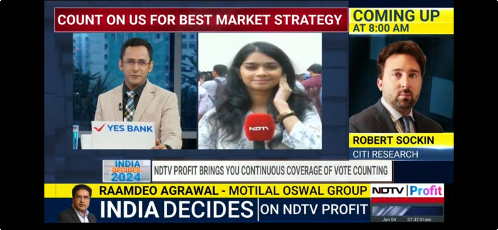
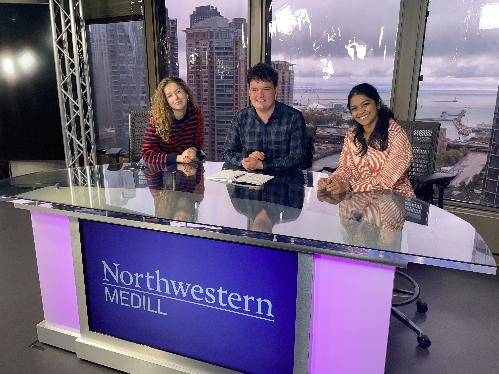

Janani Janarthanan
International journalist in Chicago.

I have a master's degree in Investigative Journalism with a focus on data from Medill School of Journalism. I have over three years of experience as a multimedia journalist, writing on topics like government policy, business and politics. I'm on the look out for opportunities at the intersection of numbers and narratives.
Beat-agnostic | Multilingual | Multimedia
Bylines in:


Memorable career moments
Swipe through →
My first job as a Radio Intern at Fever 104 FM
Post-budget interviews on television

Profiles at BW Businessworld

Live Election Coverage

Special interviews for NDTV Profit

My rewarding masters program at Medill